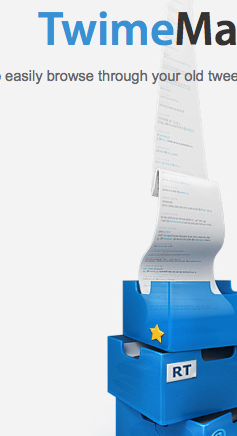
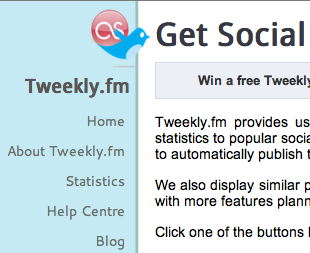
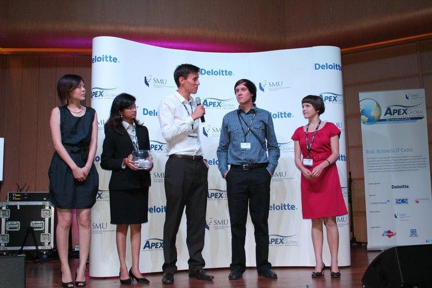

Projects I'm really proud of:
- Creator of TwimeMachine. A service that allows Twitter users to easily read and search old tweets. It has been used by over 500 000 people including famous accounts such as Paulo Coelho, Cesc Fabregas, ESPN, Buddy Media, Adidas, Daniel Zuker, Sega, CNBC, Cesc Fabregas, NBA and Swedish House Mafia. Developer and designer. Hosted on Heroku, static files on S3, and running on Django.

- Creator of Tweekly.fm. One of the first 500 Twitter applications. It allowed users to automatically share their music tastes from last.fm to Twitter. Now, a few years on, with the help of Scott Wilcox, it shares to 450 000+ updates a month from 270k users to Twitter and Facebook. It has sent more than 15 million updates. A lot of sites depend on Tweekly.fm's updates to Twitter to get an accurate measure of what people are listening to on social media sites.

Other stuff I'm really proud of:
- Best class project for retail marketing in senior year, studying merchandise management between the same brand of stores in different areas/markets.
- Represented Stellenbosch University at Apex Global IT business case competition in Singapore in 2011.

Representing Stellenbosch at Apex!
- Presented my honours research on generic social networking APIs at IADIS www/internet conference in Madrid.
- During high school started to learn programming by making games: the most famous being Roach Toaster, which won 2 game development competitions (South African and International). It has been downloaded a few thousand times. It's age shows now (very bad graphics), but I'm still really proud of it!